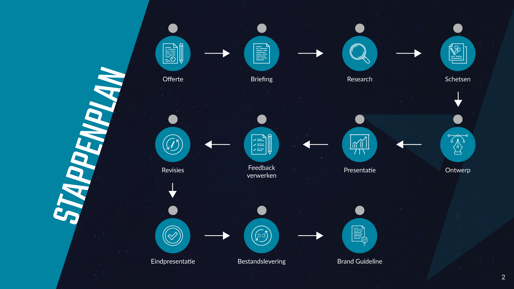

Branding
De uitdaging
Het brandingproces bij Websters verliep niet altijd uniform. Verschillende teamleden gebruikten andere werkwijzen en templates, wat leidde tot tijdsverlies, inconsistenties en minder duidelijke communicatie met klanten.

Het bestaande brandingproces werd geanalyseerd via observaties en documentenanalyse. Daarnaast werden workflows van andere branding- en designbureaus onderzocht om relevante best practices te identificeren.

Op basis van deze inzichten werden nieuwe templates ontworpen voor onder andere briefings, feedbackmomenten en eindpresentaties. Deze werden visueel uitgewerkt in Adobe Illustrator en verfijnd via interne feedback.


%20Template.png)

De nieuwe workflow en templates werden intern getest op gebruiksvriendelijkheid en toepasbaarheid. Daarna werd de definitieve workflow geïntroduceerd aan het team en geëvalueerd op basis van eerste ervaringen.
Het resultaat